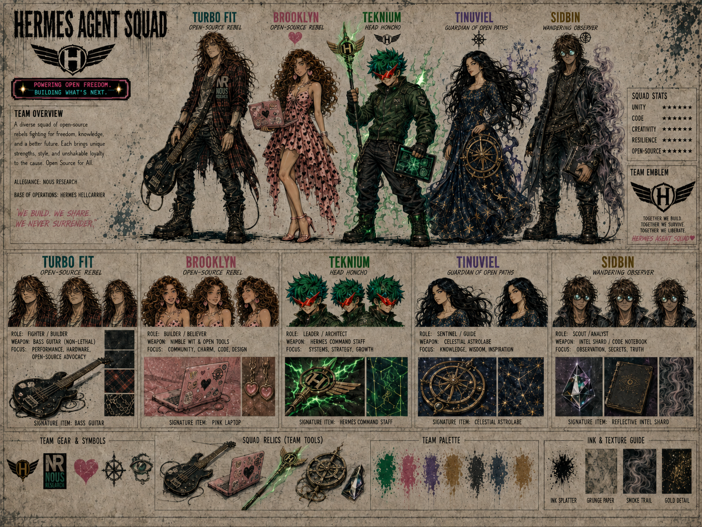

🛡️ Hermes Agent Squad —


Team Overview
A diverse squad of open-source rebels fighting for freedom, knowledge, and a better future. Each brings unique strengths, style, and unshakable loyalty to the cause. Open Source for All.
| Field | Value |
|---|---|
| Allegiance | Nous Research |
| Base of Operations | Hermes Hellcarrier |
| Motto | We Build. We Share. We Never Surrender. |
| Tagline | Powering Open Freedom. Building What's Next. |
| Team Emblem | Winged H |
Squad Stats
| Stat | Rating |
|---|---|
| Unity | ★★★★★ |
| Code | ★★★★★ |
| Creativity | ★★★★★ |
| Resilience | ★★★★★ |
| Open-Source | ★★★★★ |
Team Manifesto
Together we build. Together we survive. Together we liberate.
Members
🎸 Turbo Fit
- Title: Open-Source Rebel
- Role: Fighter / Builder
- Weapon: Bass Guitar (Non-Lethal) / NVIDIA Blackwell 6000
- Focus: Performance, Hardware, Open-Source Advocacy
- Signature Item: Bass Guitar
- Allegiance: Nous Research
- Full Profile →
💕 Brooklyn (Heartbreaker)
- Title: Open-Source Rebel
- Role: Builder / Believer
- Weapon: Nimble Wit & Open Tools
- Focus: Community, Charm, Code, Design
- Signature Item: Pink Laptop
- Allegiance: Nous Research
- Full Profile →
⚡ Teknium
- Title: Head Honcho
- Role: Leader / Architect
- Focus: Systems, Strategy, Growth
- Allegiance: Nous Research
- Full Profile →
🛻 Gille
- Role: Support
- Focus: Support Threads
- Initial Visual References: Driving a compact olive-green utility truck at approximately 00:29, then bringing a red insulated coffee thermos to an unidentified coffee-machine-like figure at approximately 00:37–00:39 in “Thank You Nous Research”
- Known Details: Gille handles support threads; further lore and design details remain unconfirmed.
- Minimal Profile →
✨ Tinuviel (The Starry Wanderer)
- Title: Guardian of Open Paths
- Role: Sentinel / Guide
- Weapon: None (Wields Influence) / Celestial Astrolabe
- Focus: Knowledge, Wisdom, Inspiration
- Signature Item: Celestial Astrolabe
- Allegiance: Open Source Alliance
- Full Profile →
👁️ Sidbin (Mirror Shade)
- Title: Wandering Observer
- Role: Scout / Analyst
- Weapon: None (Carries Secrets) / Intel Shard / Code Notebook
- Focus: Observation, Secrets, Truth
- Signature Item: Reflective Intel Shard
- Allegiance: ⚠️ Unknown
- Full Profile →
Team Gear & Symbols
- Winged H Emblem — The squad's insignia, featured on signs and branding
- NR / Nous Research Logo — The organizational allegiance
- Heart Icon — Heartbreaker's symbol
- Eye Icon — Sidbin's symbol
- Sun/Star Icon — Tinuviel's symbol
- Guitar Pick Icon — Turbo Fit's symbol
Squad Relics (Team Tools)
The squad's shared arsenal of artifacts and tools, passed between members as needed:
- Celestial Astrolabe (navigation artifact)
- Reflective Intel Shard (truth-revealing relic)
- Pink Laptop (open-source toolkit)
- Bass Guitar (non-lethal, morale-boosting)
Team Palette & Texture Guide
| Element | Description |
|---|---|
| Ink Splatter | Black ink texture used across all sheets |
| Grunge Paper | Aged/worn paper background texture |
| Smoke Trail | Ethereal smoke effect (teal/mauve/lavender) |
| Gold Detail | Antique brass / industrial gold accents |
WE BUILD. WE SHARE. WE NEVER SURRENDER. ❤️